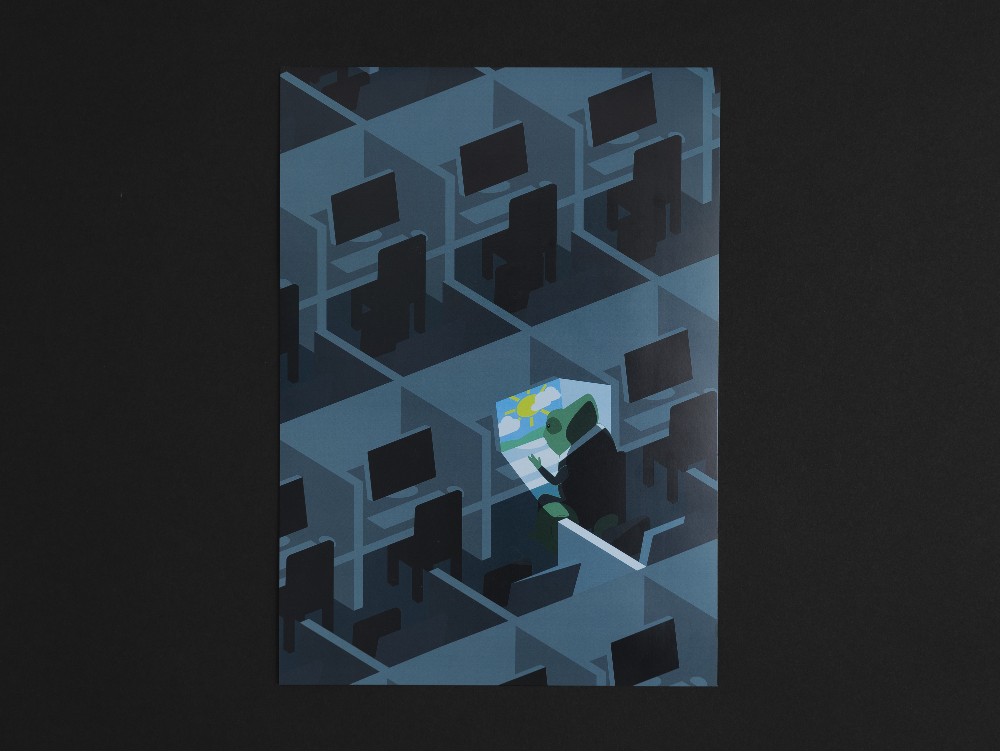
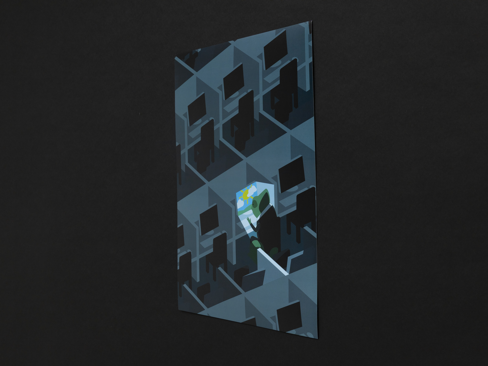

Im Kopf fühlt sich alles anders an

Hast du dich je an einer Gruppe angeschlossen, doch dich anders als alle anderen gefühlt? Hier habe ich es gestalterisch auf einem Plakat gestaltet, wobei ich möglichst versucht habe, ohne Worte es dem Zuschauer zu übermitteln. Die Chamäleons sind eine berühmte Symbolik dafür, sich anzupassen und dadurch zu verstecken. Diese Symbolik habe ich dann so ausgenutzt, indem ich das Chamäleon in einer modernen Situation hineingesteckt habe. Denn so kann das Publikum auch, falls es zu ihrer Situation passt, sich betroffen und verbunden fühlen.

